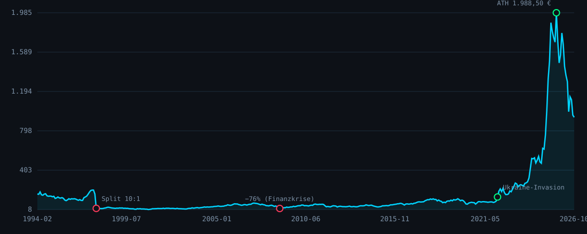
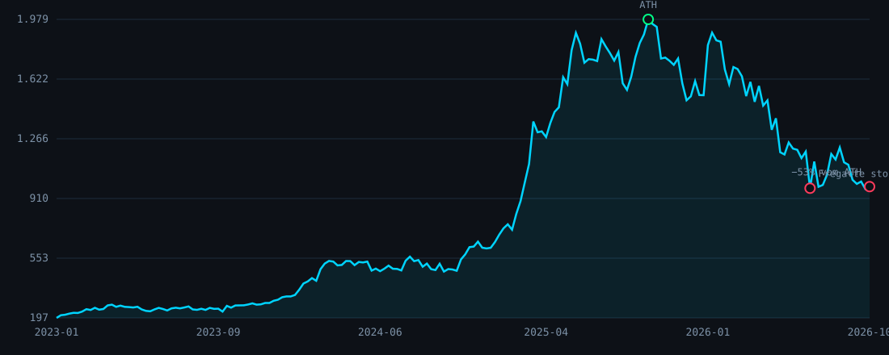

Von der Kaiserzeit über die Zwangsarbeit im NS-Staat bis zur "Ära der Aufrüstung" 2022–2025 und der Korrektur, die seither folgte. Ein faktenbasierter Report für die Akten — Firmengeschichte, harte Bilanzzahlen, vier Backtest-Strategien und ein ehrlicher Blick auf den Hype.
Rheinmetall entstand im April 1889 als Rheinische Metallwaren- und Maschinenfabrik Aktiengesellschaft, gegründet vom Bergwerks- und Hüttenkonzern Hörder Verein, um Munition für das Deutsche Kaiserreich zu fertigen. Der Ingenieur Heinrich Ehrhardt baute das Düsseldorfer Werk auf und leitete es bis 1920; die Produktion begann im Dezember 1889. Bis Kriegsende 1918 war das Unternehmen nach Krupp der zweitgrößte Hersteller schwerer Geschütze und Munition im Deutschen Reich.
Der Versailler Vertrag verbot dem Deutschen Reich die Produktion großkalibriger Waffen und zwang Rheinmetall zur zivilen Umstellung (Lokomotiven, Dampfpflüge). 1925 übernahm die staatliche VIAG im Zuge einer Kapitalerhöhung die Mehrheit der Anteile. 1933 übernahm Rheinmetall den insolvenzgefährdeten Lokomotivbauer Borsig, woraus 1936 die Umbenennung in Rheinmetall-Borsig AG folgte.
Ab Mitte der 1930er-Jahre entwickelte und produzierte das Unternehmen im Auftrag des Reichskriegsministeriums Waffen und Munition für die Aufrüstung der Wehrmacht — darunter die Flak-Geschütze 3,7 cm Flak 43 in großer Stückzahl. Das Unternehmen stand unter weitgehender Kontrolle des NS-Regimes, zeitweise mit Zugehörigkeit zum Hermann-Göring-Konzern. Die Belegschaft wuchs im Krieg auf bis zu 85.000 Beschäftigte; Rheinmetall-Borsig übernahm zudem Betriebe in besetzten Ländern wie den Niederlanden, Frankreich und Polen.
Zahlreiche Zwangsarbeiter und Kriegsgefangene arbeiteten in den Rheinmetall-Werken. Allein in Unterlüß wurden bei Kriegsende rund 5.000 ausländische Zwangsarbeiter und Kriegsgefangene von britischen Truppen befreit, darunter etwa 2.500 Polen und 1.000 Menschen aus der Sowjetunion. Das Unternehmen betrieb in Unterlüß zudem eine "Ausländerkinder-Pflegestätte" — zugleich Entbindungsheim für Zwangsarbeiterinnen und, nach Rheinmetalls eigener historischer Aufarbeitung, Sterbeort für einen Teil dieser Kinder. Rheinmetall selbst dokumentiert diese Geschichte heute offen auf seiner Unternehmensseite zur NS-Zeit.
Nach schweren Luftangriffen auf Düsseldorf wurden Teile der Produktion in spätere DDR- und polnische Gebiete (Apolda, Guben, Breslau) verlagert. Bei Kriegsende waren die meisten Rheinmetall-Borsig-Werke zerstört; die Anlagen in Düsseldorf, West-Berlin und Unterlüß kamen unter alliierte Treuhandschaft. Der Staat hielt die Mehrheitsanteile nach eigenen Angaben bis 1956. Heute ist Rheinmetall der fünftgrößte Rüstungskonzern Europas, mit Schwerpunkt auf Schützenpanzern, Munition und — seit 2025 — Marineschiffbau (Übernahme von NVL).
Quellen: Wikipedia "Rheinmetall"; rheinmetall.com/en/company/history/125-years-rheinmetall (Jahre 1936–1945) und /forced-labor-in-the-nazi-state; encyclopedia.com "Rheinmetall Berlin AG". Einzelne Daten (Borsig-Übernahme 1933 vs. 1935, exakte Zahl der Zwangsarbeiter) schwanken je nach Quelle.
Der Knick im Chart ist kein Darstellungsfehler, sondern ein realer 10:1-Aktiensplit, bestätigt über zwei unabhängige Datenquellen (363,5 € → 36,5 € in einer Woche). Der nominale Kurs ist hier bewusst unbereinigt gezeigt, um den historischen Bruch sichtbar zu lassen.

Markiert: 1997 Split · 2008 Finanzkrise (−76% Drawdown, Tief Nov. 2008) · 2022 Ukraine-Invasion · 2025 Allzeithoch 1.988,50 € · 2026 Korrektur. Datenquelle: EODHD-kompatibler Proxy, Suffix .XETRA.
Zwischen Januar 2023 und September 2025 stieg der Kurs von ca. 197 € auf 1.988,50 € — ein Faktor von 10,1x in 33 Monaten. Seit dem Hoch verlor die Aktie bis zum Tief am 07.10.2026 (926,20 €) 53,4%.

Live von Yahoo Finance über den Bilanz-Terminal-Proxy berechnet, 1:1 nach derselben Scoring-Logik wie im GENITUS Bilanz-Terminal (Profitabilität 30%, Liquidität 15%, Verschuldung 20%, Effizienz 15%, Bewertung 20%).
| Kennzahl | Wert (TTM/aktuell) | Einordnung |
|---|---|---|
| Umsatz (TTM) | 11,41 Mrd. € | +68,8% YoY |
| Umsatz (GJ 2025) | 9,94 Mrd. € | +29% YoY |
| EBITDA-Marge | 20,2% | solide für Industrie |
| Nettomarge | 6,3% | unauffällig, kein Software-Multiple gerechtfertigt |
| ROE (TTM) | 25,7% | stark |
| Eigenkapitalquote | 29,9% | solide |
| Debt/Equity | 0,26 | niedrig verschuldet |
| Zinsdeckung | 14,7x | komfortabel |
| KGV (P/E, TTM) | 36,0x | vs. 129,7x im Aug. 2025 — siehe Abschnitt 08 |
| PEG-Ratio | 0,32–0,35 | günstig relativ zum Wachstum, nicht absolut billig |
| Dividendenrendite | 1,23% | Payout-Ratio 44,7% |
| Beta | 0,48 | geringe Korrelation zum Gesamtmarkt |
Quelle: Yahoo Finance Quote/Financials-Module über stock-sentinel-domusaureaopn.replit.app, live abgerufen 09.10.2026. Operatives Ergebnis GJ2025 (1,70 Mrd. € in dieser Berechnung) liegt leicht unter dem von Rheinmetall selbst berichteten EBIT (1,84 Mrd. €) — Differenz durch EBIT- vs. Operating-Income-Definition, keine Dateninkonsistenz.
Mit der exakten Logik des GENITUS "Hätte ich gekauft"-Backtesters (Einmalanlage, monatlicher Sparplan, Dip-Käufer 20/80-Split mit bis zu 20 Nachkäufen ≥−10% Drawdown, Hodler ohne Basis-Sparplan) auf echten Wochenkursen 10/2021–10/2026 nachgerechnet:
In diesem Fenster gewinnt die reine Einmalanlage klar — ein 5-Jahres-Zeitraum, der fast ausschließlich Aufwärtstrend war, bestraft jede Strategie, die Kapital zurückhält. Die niedrigeren Max-Drawdowns der DCA/Dip/Hodler-Varianten (−47% bis −50% statt −52%) zeigen aber den echten Vorteil des Teileinstiegs: weniger Kapital war beim Crash überhaupt exponiert.
Über die komplette verfügbare Historie (Feb. 1994 – Okt. 2026, Schwelle −20%) ergäbe dieselbe Rechnung aus 10.000 € theoretisch 1.389.185 € (Dip-Käufer) bzw. 536.073 € (Hodler, 234 Rücksetzer über 32,7 Jahre).
Historische Rolling-Window-Simulation (kein Monte Carlo) über alle möglichen Startpunkte der letzten 5 Jahre, mit fester wöchentlicher Entnahme:
| Entnahmerate | Horizont | Startpunkte (n) | Bestes Endkapital | Schlechtestes Endkapital |
|---|---|---|---|---|
| 4% | 1 Jahr | 210 | 400.360 € | 46.379 € |
| 4% | 3 Jahre | 106 | 1.292.703 € | 340.524 € |
| 6% | 1 Jahr | 210 | 396.266 € | 44.946 € |
| 6% | 3 Jahre | 106 | 1.260.685 € | 332.504 € |
Kein Startpunkt führte in diesem Fenster zur vollständigen Depletion — die 5 Jahre waren schlicht zu stark bullisch dafür. Aber: der schlechteste Startpunkt (kurz vor dem 2025/26-Crash) halbiert das Kapital binnen eines Jahres trotz Entnahme aus einem der stärksten Fünfjahres-Läufe überhaupt. Sequenzrisiko gilt auch für Gewinneraktien.
Einfache Zustandsübergangs-Analyse auf Wochenbasis (steigt/fällt die Woche, gegeben die Vorwoche):
| Zeitraum | P(Anstieg | Vorwoche Anstieg) | P(Anstieg | Vorwoche Rückgang) | Ø Wochenrendite |
|---|---|---|---|
| Vollhistorie (1.705 Wochen) | 55,4% | 54,9% | +0,42% |
| Letzte 5 Jahre (261 Wochen) | 55,5% | 57,0% | +1,14% |
Beide Übergangswahrscheinlichkeiten liegen nah an 50/50 — kein verwertbares Momentum- oder Mean-Reversion-Signal auf Wochenebene, nur eine deutlich positive Durchschnittsrendite (Drift). Das stützt die These: der Boom war ein Trend, kein wiederkehrendes, vorhersagbares Muster.
15 Monate reale, über den EOD-Proxy abgerufene Schlagzeilen (keine Zusammenfassung, Originaltitel) — chronologisch, ungekürzt in der Auswahl:
Das KGV fiel von 129,7x (Aug. 2025) auf 36,0x (Okt. 2026) — ein Rückgang von 72%. Nur ein Teil davon ist der Kurssturz (−53%); der Rest ist echtes Gewinnwachstum, das die Bewertung organisch eingeholt hat (Umsatz +69% TTM, operativer Gewinn deutlich zweistellig). Die Schlagzeilen zeigen keinen Beleg für koordinierte "Propaganda" im Sinne einer gesteuerten Kampagne — dafür gibt es in den ausgewerteten Quellen keinen Hinweis, und eine solche Behauptung ließe sich aus Nachrichtentiteln allein nicht seriös belegen. Was sich aber klar zeigt: Ein geopolitisches Narrativ ("Europa rüstet auf") trieb die Bewertung weit vor die fundamentale Entwicklung — jede Erwartungsenttäuschung (Fregatten-Stornierung, Umsatzverfehlung, Friedensgespräche) löste überproportionale Kursreaktionen aus. Genau das bestätigt die Intuition aus der Frage: der Hype lief dem Kursverlauf und der (bescheidenen, 1,2%) Dividendenrendite spürbar voraus — als Erwartungs-, nicht als Ertrags-Story.
Kurzfristig (Wochen–Monate): Hohe Schwankungsbreite bleibt wahrscheinlich — jede Nachricht zu Ukraine-Friedensgesprächen, Nahost-Eskalation oder einzelnen Großaufträgen hat in den letzten 18 Monaten zweistellige Tagesbewegungen ausgelöst (Fregatten-Stornierung: −14% an einem Tag). Analysten-Kursziele liegen deutlich auseinander: JPMorgan senkte sein Kursziel im Mai 2026 um rund 30%, während Morningstar weiterhin einen Fair Value von 2.380 € ansetzt (konkrete Zielpreis-Zahlen hierzu lagen nicht in den ausgewerteten Quellen vor) — eine Spannbreite, die selbst die Konsens-Unsicherheit widerspiegelt.
Mittelfristig (1–3 Jahre): Die Guidance für 2026 (Management-Ausblick: Umsatz 14,0–14,5 Mrd. €, operative Marge nahe 19%) wurde zuletzt leicht gesenkt, aber bestätigt. Das KGV von 36x ist für ein Unternehmen mit +69% Umsatzwachstum TTM kein offensichtlich überteuertes Niveau mehr — der PEG von 0,32 deutet sogar auf eine relativ günstige Bewertung hin, vorausgesetzt das Wachstumstempo hält an. Das größte mittelfristige Risiko laut Nachrichtenlage: Europas politische Aufrüstungs-Ankündigungen übersetzen sich nicht immer so schnell in abgerufene Milliarden-Aufträge, wie der Markt 2025 eingepreist hatte.
Langfristig (5+ Jahre): Der Markov-Check (Abschnitt 07) findet kein ausnutzbares Muster — nur eine starke historische Drift. Über 32,7 Jahre lieferte die Aktie 15,9% p.a. (Gesamtrendite), durch mindestens zwei Krisen mit über 75% Drawdown (2008, und — nach Bereinigung des Split-Artefakts — vermutlich auch um 2000/2001). Die Kernfrage für die nächste Dekade ist strukturell, nicht chartbasiert: ob Europas Verteidigungsausgaben als politischer Trend anhält, der wie 2022–2025 Umsatz und Gewinn trägt, oder ob das derzeitige Rearmament eine konjunkturelle Welle war, die — wie die Korrektur seit Herbst 2025 bereits zeigt — genauso schnell abebben kann, wie sie kam.